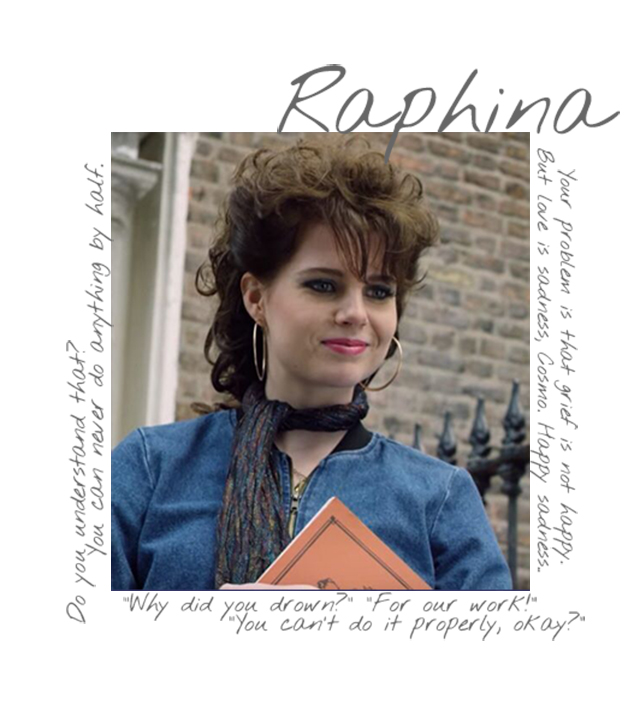
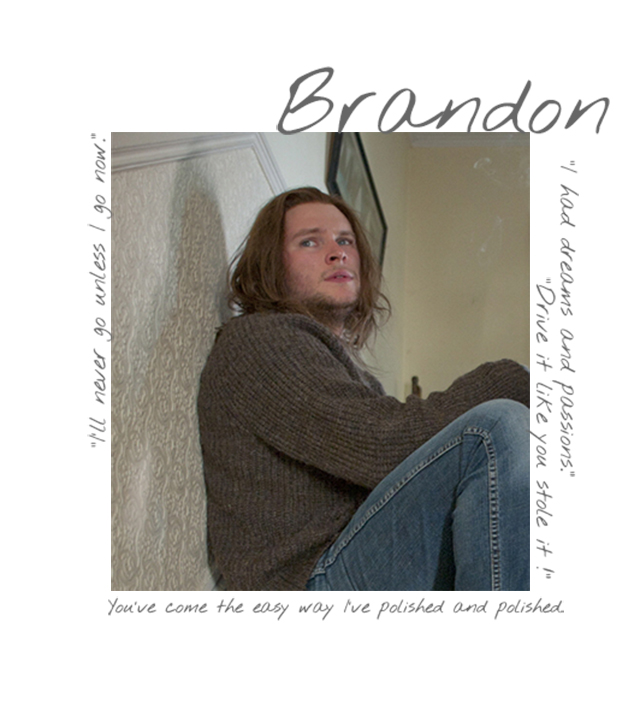
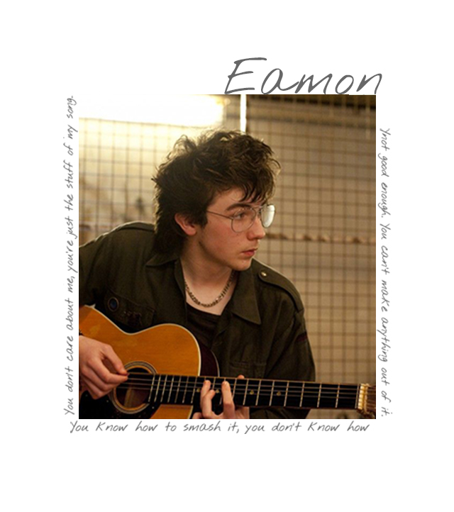
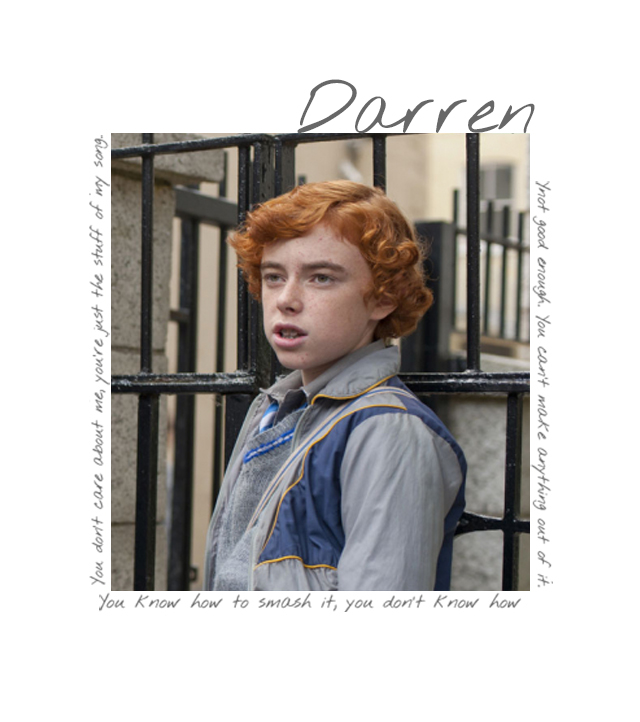
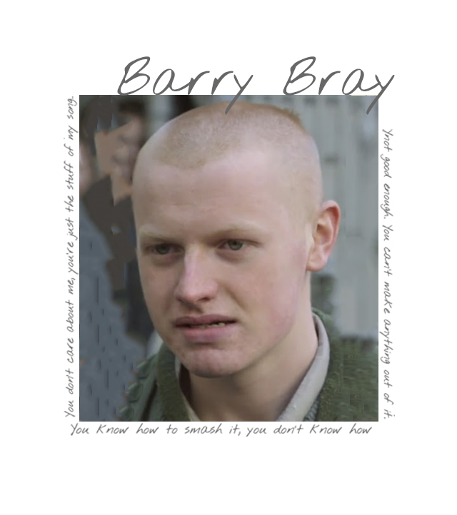

본문콘텐츠영역
Characters

- Conor
- He is interested in music due to his brother's influence and is in charge of writing and vocals in the Sinstreet band, where he sees Rafina standing in front of the school and forms a band. Rafina, who listened to Connor's song, gives Connor a name called Cosmo.

- Raphina
- I am going to England with a man I was meeting with dreaming of a model, the moment Connor formed the band, and most of the songs were inspired by Rafina. It appears in music videos at Connor's suggestion.

- Brandon
- A key member of Sinstreet. Not only does he write, but he also handles many instruments well. There are many rabbits at home.

- Eamon
- Singer Street's producer and music video director; when Connor asked to make a band, it helps to form members.

- Darren
- A rogue student who harassed Connor who transferred to school. Darren's suggestion takes on the role of bodyguard on Sinstreet.

- Berry
- A rogue student who harassed Connor who transferred to school. Darren's suggestion takes on the role of bodyguard on Sinstreet.